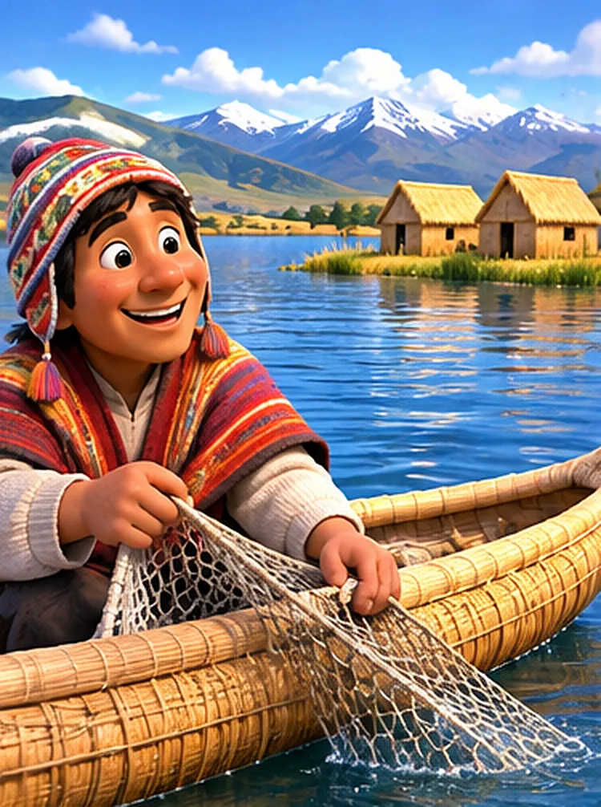
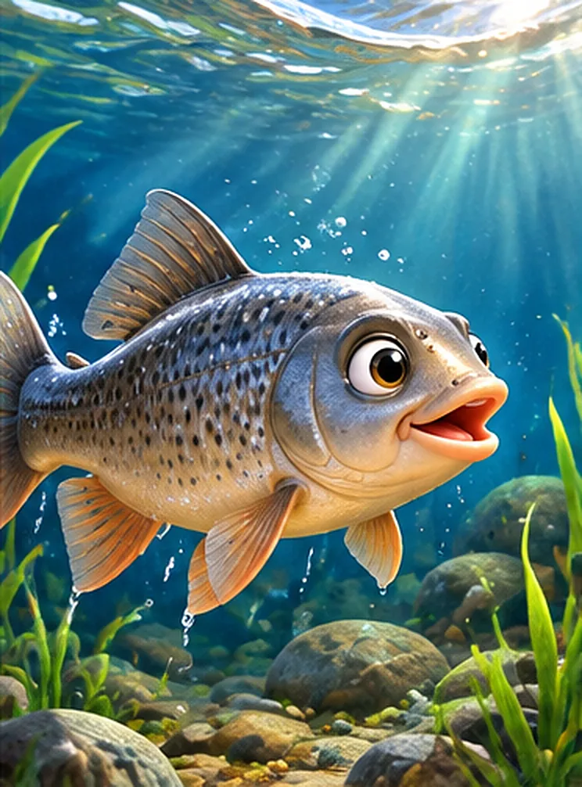
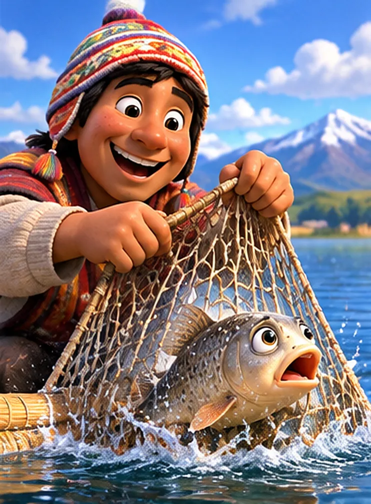
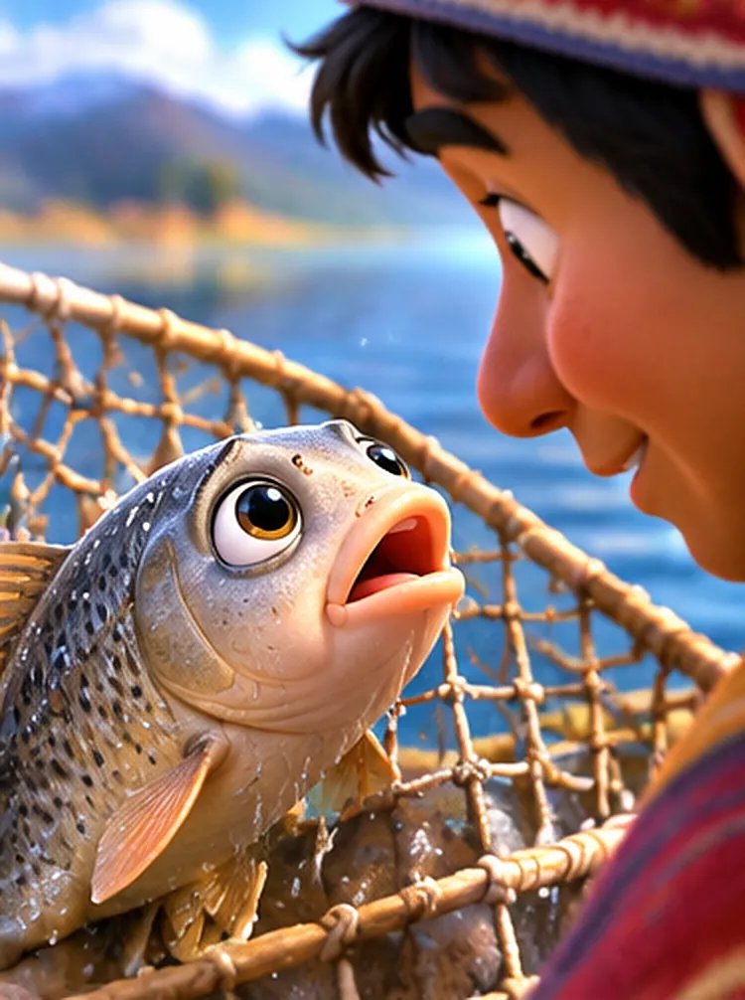
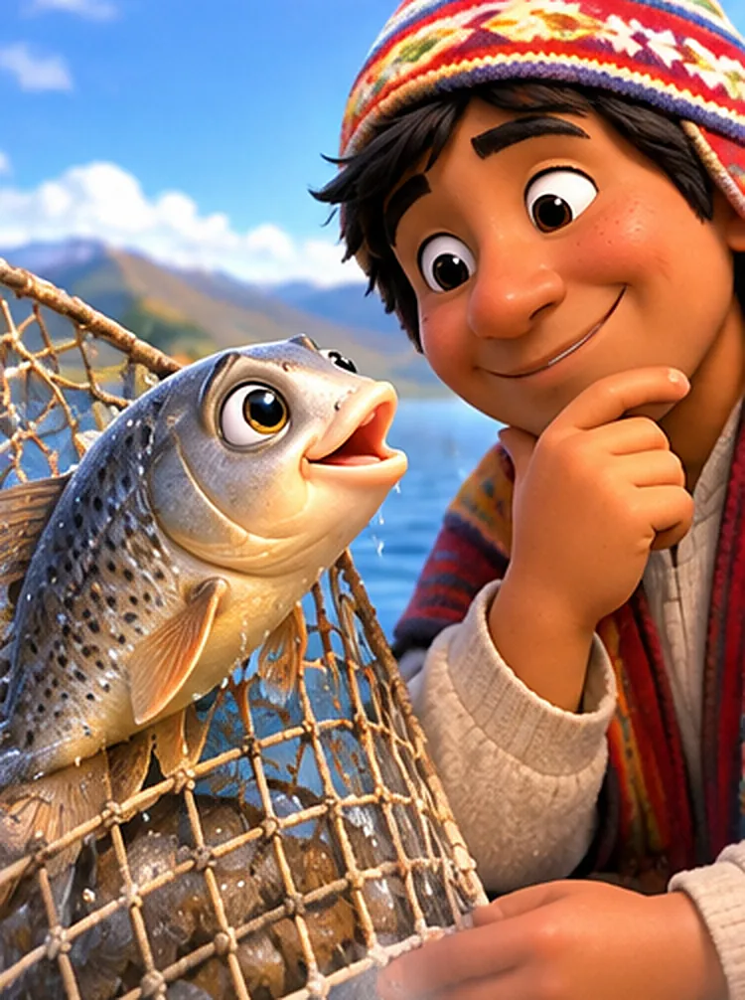
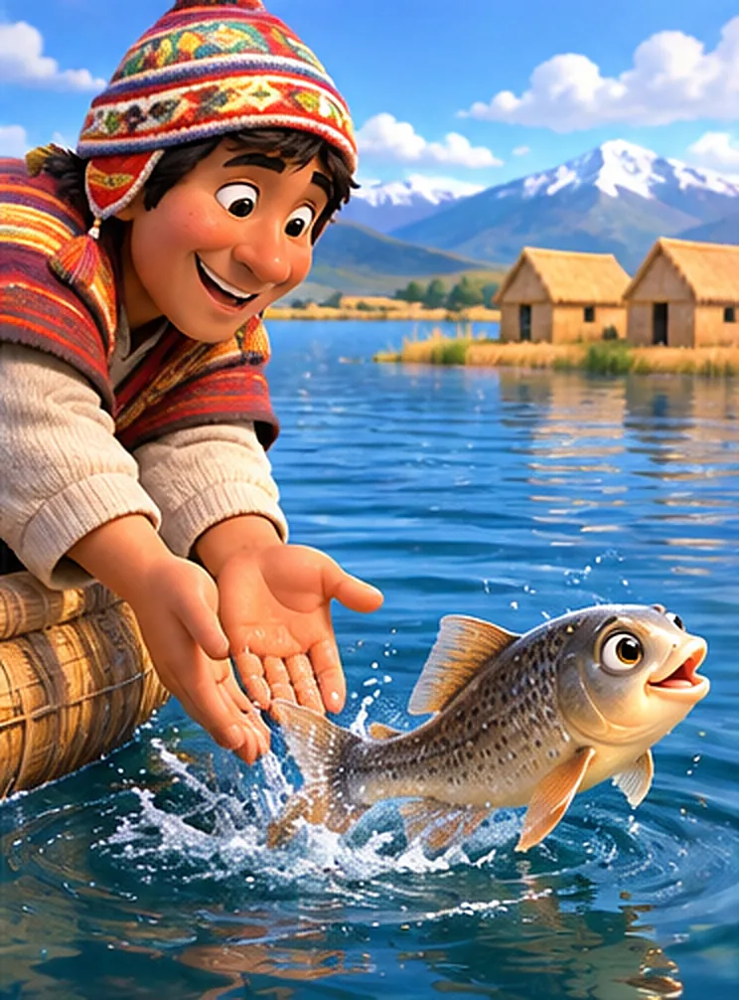
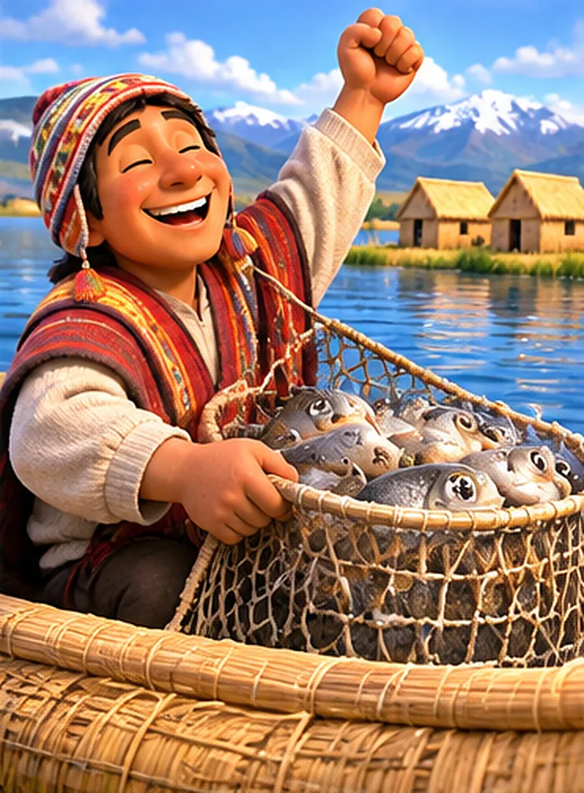
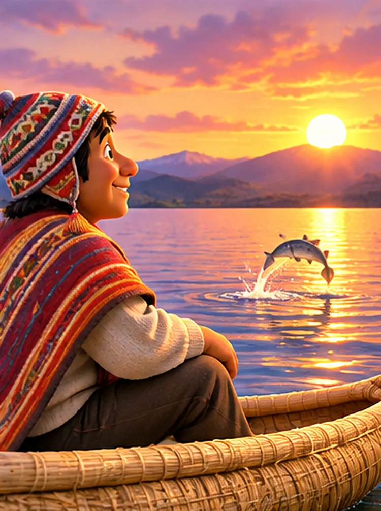

Hace muchos años, a orillas del hermoso lago Titicaca, vivía un humilde pescador llamado Mateo.
Todas las mañanas, antes de que saliera el sol, Mateo se ponía su chullo de colores, preparaba sus redes y salía a pescar en su pequeña embarcación de totora.
—¡Buenos días, querido lago! —decía alegremente—. Espero que hoy me regales algunos peces para alimentar a mi familia.
Mateo amaba el lago, porque sus aguas le habían dado alimento desde que era niño.

En las profundidades del lago vivía un pequeño pez llamado Kari, un carachi de escamas brillantes y ojos curiosos.
Kari era muy juguetón. Le encantaba nadar entre las plantas acuáticas y esconderse detrás de las piedras.
—Kari, ten cuidado con las redes de los pescadores —le advertía siempre su mamá.
—¡No te preocupes, mamá! ¡Soy el pez más rápido de todo el Titicaca! —respondía Kari, y salía nadando a toda velocidad.

Una mañana, mientras Kari perseguía unas pequeñas burbujas, no se dio cuenta de que una enorme red descendía lentamente.
¡Zas! De pronto, quedó atrapado.
—¡Auxilio! ¡Auxilio! —gritó, moviendo su pequeña cola.
Mateo levantó la red y descubrió al pequeño carachi.
—¡Vaya! ¡Qué bonito pez he pescado! —exclamó.
Pero Kari estaba muy asustado.

Cuando Mateo se acercó para observarlo, ocurrió algo extraordinario: ¡el pequeño carachi comenzó a hablar!
—Señor pescador, por favor, déjeme regresar al lago.
—¡Un pez que habla! ¡Nunca había visto algo semejante! —dijo Mateo, con los ojos muy abiertos.
—Soy todavía pequeño. Mi mamá me espera entre las plantas del lago. Si me deja regresar, prometo que nunca olvidaré su bondad.

Mateo se quedó pensando.
Había salido a pescar para alimentar a su familia, pero aquel pequeño pez necesitaba seguir creciendo.

Mateo miró al carachi y sonrió.
—Pequeño Kari, hoy has tenido mucha suerte. Regresa con tu mamá y crece fuerte.
Con mucho cuidado, lo tomó entre sus manos y lo devolvió al agua. ¡Splash! Kari dio un salto de alegría.
—¡Gracias, señor pescador! ¡Gracias por darme otra oportunidad!
Antes de desaparecer entre las aguas, movió su colita como si se estuviera despidiendo. Mateo sonrió y continuó pescando.
Pasaron algunas horas y Mateo comenzó a preocuparse.
—Hoy casi no he pescado nada. ¿Qué llevaré a mi familia?
De pronto, vio que el agua se movía cerca de su embarcación. ¡Era Kari, acompañado de muchos peces!
—¡Señor Mateo! ¡He regresado para agradecerle! —gritó.
—¡Kari! ¡Qué alegría verte! —respondió Mateo, sorprendido.
—Mis amigos y yo queremos ayudarlo. Más allá de aquellas totoras hay peces grandes que ya han crecido. ¡Puede pescar algunos allí!
Y Mateo siguió su consejo.

Cuando Mateo lanzó su red en aquel lugar, encontró una buena cantidad de peces adultos.
—¡Qué maravilla! ¡Ahora tendré suficiente alimento para mi familia! —exclamó.
Pero recordó algo importante:
—Solo llevaré los que necesitamos. Los demás deben seguir viviendo en el lago.
—¡Eso es, señor Mateo! ¡Así siempre habrá peces para todos! —dijo Kari, sonriendo desde el agua.
Aquella noche, Mateo compartió una deliciosa cena con su familia y les contó la increíble historia del carachi que hablaba.
—¡Papá! ¿De verdad un pez te habló? —preguntaron sus hijos, maravillados.
—¡Claro que sí! ¡Y me enseñó una gran lección! —respondió Mateo, sonriendo.

Al día siguiente, cuando el sol comenzaba a esconderse detrás de las montañas, Mateo regresó al lago y contempló las aguas doradas.
De pronto, un pequeño pez saltó frente a él. ¡Splash!
—¡Hasta mañana, amigo Mateo! —gritó Kari.
—¡Hasta mañana, pequeño amigo! —respondió el pescador.
Desde aquel día, Mateo siempre respetó a los peces pequeños y pescó únicamente lo necesario. Y Kari nunca olvidó al hombre que le había dado una segunda oportunidad.
Así nació una hermosa amistad entre un humilde pescador y un pequeño carachi del lago Titicaca.
Fin.
La bondad que entregamos a los demás puede regresar a nosotros de maneras inesperadas. Y recuerda: cuidar a los animales pequeños y respetar la naturaleza es proteger la vida de mañana.